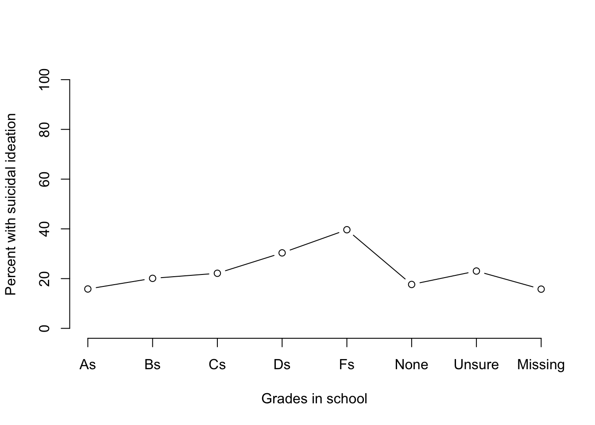
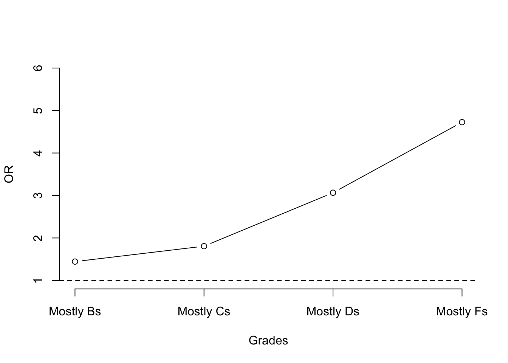
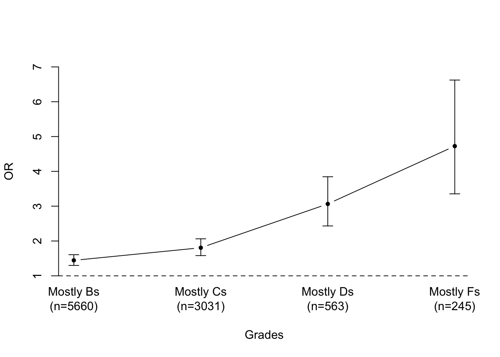

# Setting new variable to be true if old variable is 1 and 0 otherwise
yrbs$newvariable=yrbs$oldvariable==1
# check it did what you expected tally(newvariable ~ oldvariable, data=yrbs)13 Example data analysis in YRBS
13.1 Summary of statistical methods
Recall the table from chapter 1 for summarizing data from categorical (C) and quantitative (Q) variables. The types of analysis depend on the types of data.
We divide data into categorical (C) and quantitative (Q). The types of analysis depend on the types of data.
Categorical variables can further be categorized as ordinal or non-ordinal.
| Variable type | Outcome Quantitative | Outcome Categorical |
|---|---|---|
| Predictor quantitative | \(Q \rightarrow Q\) | \(Q \rightarrow C\) |
| Predictor categorical | \(C \rightarrow Q\) | \(C \rightarrow C\) |
The displays and analysis types are not meant to correspond to each other.
This table is not meant to be a cookbook. This table demonstrates that some types of analysis definitely do not make sense for some types of data. E.g., scatterplot cannot be used instead of 2x2 table.
| Data | Display | Analysis |
|---|---|---|
| \(Q \rightarrow Q\) | scatterplots (xyplot) | linear regression (lm) |
| \(Q \rightarrow C\) or \(C \rightarrow Q\) | Box and whisker plot (bwplot) | |
| dotplot (w or w/o confidence interval) | ||
| Categorical variable is binary | stratified density plot (densityplot) | t-test, Wilcoxon |
| Categorical variable is binary | Logistic regression glm( , family=binomial) | |
| Categorical variable is not binary | test for trend (if ordinal): e.g., Cuzick’s | |
| Categorical variable is not binary | Tukey’s HSD (anova followesd by TukeyHSD) | |
| Categorical variable is not binary | transform to binary and use above methods | |
| \(C \rightarrow C\) | Contingency table (tally) | chi-square test (chisq.test) |
| Kruskal-Wallis test (kruskal.test) | ||
| pairwise chi-square test |
13.2 Logistic regression
The regression type that you use is determined by your outcome variable, not by your predictors. Many outcome variables are binary/dichotomous: that is, they take only the values 0 or 1 (or FALSE and TRUE). You can model binary outcome variables with four different methods: logistic regression, Poisson regression, ordinary linear regression, and probit regression. Logistic regression is most commonly used in public health.
The coefficients in a logistic regression are log odds ratios; many statistical programs will transform them automatically for you. The predicted values from a logistic regression are the estimated probabilities of the event occurring.
13.2.1 Variable selection and coding for data analysis
There are many guidelines for identifying covariates for data analysis. Here are some ideas: • Important demographic features: socioeconomic status, race/ethnicity, gender, age. These may be important to control for, even if non-significant. • Variables predicted to be potential confounders by relevant theories: e.g., health behavior theories often include a construct relevant to self-efficacy to carry out a health behavior. • Variables used as control variables in other papers can suggest both which theories are important and empirically which variables are important.
13.2.2 Examples of logistic regression in YRBS
We start out by defining necessary variables. I rename everything so that I can read the output more easily. I also change factors to a scale that makes sense. For all varaibles, consult the codebook. Each variable is listed at least twice: first, to show the wording of the question and the answer choices followed by a dichotomized version (if applicable); second, to show the distribution of the variable (how many respondents gave each answer) and the coding (e.g., 1 = yes and 2 = no). For creating new variable:
Load necessary libraries and data. We are using a new library here called arm because it displays regression analysis results compactly. Check data has expected number of variables (columns) and observations (rows).
We use the Stata format because it reliably keeps the labels.
library(readstata13)
library(mosaic)
library(arm)
yrbs=read.dta13("yrbs2019.dta")
dim(yrbs)[1] 13677 235Age is originally on a scale from 1 to 7, but I express it as the actual age in years.
tally(~Q1, data=yrbs)Q1
12 years old or younger 13 years old 14 years old
60 27 1699
15 years old 16 years old 17 years old
3473 3628 3102
18 years old or older <NA>
1616 72 yrbs$age = as.numeric(yrbs$Q1)+11
tally(Q1~age, data=yrbs) age
Q1 12 13 14 15 16 17 18 <NA>
12 years old or younger 60 0 0 0 0 0 0 0
13 years old 0 27 0 0 0 0 0 0
14 years old 0 0 1699 0 0 0 0 0
15 years old 0 0 0 3473 0 0 0 0
16 years old 0 0 0 0 3628 0 0 0
17 years old 0 0 0 0 0 3102 0 0
18 years old or older 0 0 0 0 0 0 1616 0
<NA> 0 0 0 0 0 0 0 72yrbs$female= yrbs$Q2=="Female"
tally(Q2~female, data=yrbs) female
Q2 TRUE FALSE <NA>
Female 6885 0 0
Male 0 6641 0
<NA> 0 0 151# Define race/ethnicity categories
yrbs$black=yrbs$raceeth=="black or african american"
tally(black ~ raceeth, data=yrbs) raceeth
black Am Indian/Alaska Native Asian Black or African American
TRUE 0 0 0
FALSE 145 618 2040
<NA> 0 0 0
raceeth
black Native Hawaiian/Other PI White Hispanic / Latino Multiple - Hispanic
TRUE 0 0 0 0
FALSE 69 6668 1009 2029
<NA> 0 0 0 0
raceeth
black Multiple - Non-Hispanic <NA>
TRUE 0 0
FALSE 661 0
<NA> 0 438yrbs$hispanic=(yrbs$raceeth=="hispanic / latino" | yrbs$raceeth=="multiple - hispanic")
tally(hispanic ~ raceeth, data=yrbs) raceeth
hispanic Am Indian/Alaska Native Asian Black or African American
TRUE 0 0 0
FALSE 145 618 2040
<NA> 0 0 0
raceeth
hispanic Native Hawaiian/Other PI White Hispanic / Latino Multiple - Hispanic
TRUE 0 0 0 0
FALSE 69 6668 1009 2029
<NA> 0 0 0 0
raceeth
hispanic Multiple - Non-Hispanic <NA>
TRUE 0 0
FALSE 661 0
<NA> 0 438yrbs$white=yrbs$raceeth=="white"
yrbs$asian=yrbs$raceeth=="asian"
yrbs$multi.nonhispanic=yrbs$raceeth=="multiple - non-hispanic"Grade in school. Set grade to missing if grade is 13.
yrbs$grade=as.numeric(yrbs$Q3)+8
is.na(yrbs$grade)=yrbs$grade==13
tally(~grade, data=yrbs)grade
9 10 11 12 <NA>
3637 3717 3322 2850 151 yrbs$age.for.grade=yrbs$age-yrbs$grade
tally(~age.for.grade, data=yrbs)age.for.grade
0 1 2 3 4 5 6 7 8 9 <NA>
7 14 16 34 93 6269 6572 472 30 4 166 yrbs$appropriate.age.for.grade=yrbs$age.for.grade<=6
tally(appropriate.age.for.grade ~age.for.grade, data=yrbs) age.for.grade
appropriate.age.for.grade 0 1 2 3 4 5 6 7 8 9
TRUE 7 14 16 34 93 6269 6572 0 0 0
FALSE 0 0 0 0 0 0 0 472 30 4
<NA> 0 0 0 0 0 0 0 0 0 0
age.for.grade
appropriate.age.for.grade <NA>
TRUE 0
FALSE 0
<NA> 166Wearing a seatbelt never/rarely
yrbs$rarely.seatbelt=yrbs$QN8==1
tally(rarely.seatbelt ~ Q8 , data=yrbs) Q8
rarely.seatbelt Never Rarely Sometimes Most of the time Always <NA>
TRUE 294 495 0 0 0 0
FALSE 0 0 1064 2999 6297 0
<NA> 0 0 0 0 0 2528yrbs$msm = (yrbs$Q65=="Males" & yrbs$female==0)
yrbs$wsw = (yrbs$Q65=="Females" & yrbs$female==1)
yrbs$same.sex.only= ( yrbs$msm | yrbs$wsw )
yrbs$same.sex= ( yrbs$same.sex.only | yrbs$Q65=="Females and males")
tally(same.sex ~ Q65, data=yrbs) Q65
same.sex Never had sexual contact Females Males Females and males <NA>
TRUE 0 193 99 543 0
FALSE 4988 2642 2214 0 0
<NA> 0 30 17 0 2951yrbs$glb=yrbs$Q66=="Gay or lesbian" | yrbs$Q66=="Bisexual"
tally(glb ~ Q66, data=yrbs) Q66
glb Heterosexual (straight) Gay or lesbian Bisexual Not sure <NA>
TRUE 0 380 1151 0 0
FALSE 10853 0 0 591 0
<NA> 0 0 0 0 702We also think that sexual orientation could be related. Define variables for which sex respondents have had sex with (MSM = males who have sex with males, WSW = women who have sex with women), and their sexual orientation. Note that MSM/WSW variables are associated with the predictor of number of sexual partners, so it’s problematic to use them as covariates.
yrbs$glbq=yrbs$Q66=="Gay or lesbian" | yrbs$Q66=="Bisexual" | yrbs$Q66=="Not sure"
tally(glbq ~ Q66, data=yrbs) Q66
glbq Heterosexual (straight) Gay or lesbian Bisexual Not sure <NA>
TRUE 0 380 1151 591 0
FALSE 10853 0 0 0 0
<NA> 0 0 0 0 702yrbs$any.sports.team=yrbs$QN82==1
tally(any.sports.team ~ Q82, data=yrbs) Q82
any.sports.team 0 teams 1 team 2 teams 3 or more teams <NA>
TRUE 0 2584 1737 1224 0
FALSE 4242 0 0 0 0
<NA> 0 0 0 0 389013.3 Strength training and sexual partners
Strength training and number of sexual partners Our main predictor and outcome variables are number of sexual partners and days of strength training.
13.3.1 Define variables
yrbs$num.partners=as.numeric(yrbs$Q60) - 1
tally(num.partners ~ Q60, data=yrbs) Q60
num.partners Never had sex 1 person 2 people 3 people 4 people 5 people
0 7435 0 0 0 0 0
1 0 2043 0 0 0 0
2 0 0 926 0 0 0
3 0 0 0 563 0 0
4 0 0 0 0 294 0
5 0 0 0 0 0 197
6 0 0 0 0 0 0
<NA> 0 0 0 0 0 0
Q60
num.partners 6 or more people <NA>
0 0 0
1 0 0
2 0 0
3 0 0
4 0 0
5 0 0
6 501 0
<NA> 0 1718yrbs$days.strength.training=as.numeric(yrbs$Q95) - 1
tally(Q95~days.strength.training, data=yrbs) days.strength.training
Q95 0 1 2 3 4 5 6 7 <NA>
0 days 2568 0 0 0 0 0 0 0 0
1 day 0 812 0 0 0 0 0 0 0
2 days 0 0 973 0 0 0 0 0 0
3 days 0 0 0 1067 0 0 0 0 0
4 days 0 0 0 0 763 0 0 0 0
5 days 0 0 0 0 0 877 0 0 0
6 days 0 0 0 0 0 0 361 0 0
7 days 0 0 0 0 0 0 0 1053 0
<NA> 0 0 0 0 0 0 0 0 5203yrbs$any.strength.training=yrbs$days.strength.training >= 1
tally(Q95~any.strength.training, data=yrbs) any.strength.training
Q95 TRUE FALSE <NA>
0 days 0 2568 0
1 day 812 0 0
2 days 973 0 0
3 days 1067 0 0
4 days 763 0 0
5 days 877 0 0
6 days 361 0 0
7 days 1053 0 0
<NA> 0 0 520313.3.2 Crude odds ratio
Evaluate whether strength training is associated with number of sexual partners. The first model estimates the crude odds ratio and its p-value. The second model estimates the adjusted odds ratio, adjusting for age, gender, and sports team participation.
model0=glm(any.strength.training ~ num.partners, family="binomial", data=yrbs)
cbind(exp(coef(model0)), exp(confint(model0)))Waiting for profiling to be done... 2.5 % 97.5 %
(Intercept) 2.325748 2.197629 2.462291
num.partners 1.023808 0.991453 1.05774213.3.3 Adjusted odds ratio
model1=glm(any.strength.training ~ num.partners + age + female + any.sports.team + any.sports.team*female + glb + glb*female , family="binomial", data=yrbs)
display(model1, detail=T)glm(formula = any.strength.training ~ num.partners + age + female +
any.sports.team + any.sports.team * female + glb + glb *
female, family = "binomial", data = yrbs)
coef.est coef.se z value Pr(>|z|)
(Intercept) 1.93 0.37 5.19 0.00
num.partners 0.03 0.02 1.72 0.08
age -0.09 0.02 -3.92 0.00
femaleTRUE -0.40 0.08 -5.19 0.00
any.sports.teamTRUE 1.38 0.08 16.40 0.00
glbTRUE -0.62 0.16 -3.77 0.00
femaleTRUE:any.sports.teamTRUE -0.38 0.11 -3.44 0.00
femaleTRUE:glbTRUE 0.34 0.19 1.80 0.07
---
n = 7433, k = 8
residual deviance = 8312.0, null deviance = 9031.6 (difference = 719.6)cbind(exp(coef(model1)),exp(confint(model1)))Waiting for profiling to be done... 2.5 % 97.5 %
(Intercept) 6.9165709 3.3364304 14.3661158
num.partners 1.0324601 0.9958725 1.0709013
age 0.9139132 0.8736332 0.9559790
femaleTRUE 0.6683446 0.5738147 0.7780850
any.sports.teamTRUE 3.9775010 3.3752060 4.6951738
glbTRUE 0.5400348 0.3925578 0.7459683
femaleTRUE:any.sports.teamTRUE 0.6859657 0.5531117 0.8501359
femaleTRUE:glbTRUE 1.4015063 0.9693141 2.0204604The crude odds ratio and 95% confidence interval for the association between number of sexual partners and engaging in any strength training is 1.03 (1.01, 1.06), and the adjusted odds ratio is 1.04 (1.01, 1.07), adjusting for age, sex, sexual orientation, and sports team participation. We can regard the coefficients on these control variables as nuisance parameters. We can evaluate for effect modification by gender for both our main effect.
model2=glm(any.strength.training ~ num.partners + age + female + any.sports.team + any.sports.team*female + glb + glb*female + num.partners*female, family="binomial", data=yrbs)
display(model2, detail=T)glm(formula = any.strength.training ~ num.partners + age + female +
any.sports.team + any.sports.team * female + glb + glb *
female + num.partners * female, family = "binomial", data = yrbs)
coef.est coef.se z value Pr(>|z|)
(Intercept) 1.82 0.37 4.85 0.00
num.partners 0.09 0.03 3.46 0.00
age -0.09 0.02 -3.73 0.00
femaleTRUE -0.31 0.08 -3.67 0.00
any.sports.teamTRUE 1.37 0.08 16.29 0.00
glbTRUE -0.63 0.16 -3.85 0.00
femaleTRUE:any.sports.teamTRUE -0.37 0.11 -3.40 0.00
femaleTRUE:glbTRUE 0.37 0.19 1.99 0.05
num.partners:femaleTRUE -0.12 0.04 -3.29 0.00
---
n = 7433, k = 9
residual deviance = 8301.0, null deviance = 9031.6 (difference = 730.6)cbind(exp(coef(model2)),exp(confint(model2)))Waiting for profiling to be done... 2.5 % 97.5 %
(Intercept) 6.1572718 2.9583529 12.8375392
num.partners 1.0971433 1.0417864 1.1573405
age 0.9175708 0.8770303 0.9599216
femaleTRUE 0.7369965 0.6261359 0.8671537
any.sports.teamTRUE 3.9458993 3.3478580 4.6585373
glbTRUE 0.5322496 0.3865827 0.7357501
femaleTRUE:any.sports.teamTRUE 0.6890158 0.5555495 0.8539527
femaleTRUE:glbTRUE 1.4537884 1.0042945 2.0984839
num.partners:femaleTRUE 0.8873172 0.8260548 0.9524688There is much effect modification, so we may prefer to create separate models for males and females.
model2f=glm(any.strength.training ~ num.partners + age
+ any.sports.team + glb , family="binomial", data=yrbs, subset=female==1)
display(model2f, detail=T)glm(formula = any.strength.training ~ num.partners + age + any.sports.team +
glb, family = "binomial", data = yrbs, subset = female ==
1)
coef.est coef.se z value Pr(>|z|)
(Intercept) 1.52 0.49 3.12 0.00
num.partners -0.03 0.03 -1.02 0.31
age -0.09 0.03 -2.84 0.00
any.sports.teamTRUE 1.00 0.07 14.18 0.00
glbTRUE -0.26 0.09 -2.80 0.01
---
n = 3839, k = 5
residual deviance = 4743.0, null deviance = 4998.2 (difference = 255.2)cbind(exp(coef(model2f)),exp(confint(model2f)))Waiting for profiling to be done... 2.5 % 97.5 %
(Intercept) 4.5913847 1.7612809 11.9864705
num.partners 0.9737004 0.9254261 1.0248685
age 0.9168951 0.8635863 0.9734297
any.sports.teamTRUE 2.7183719 2.3681710 3.1225726
glbTRUE 0.7737496 0.6467414 0.9265395model2m=glm(any.strength.training ~ num.partners + age + any.sports.team + glb , family="binomial", data=yrbs, subset=female==0)
display(model2m, detail=T)glm(formula = any.strength.training ~ num.partners + age + any.sports.team +
glb, family = "binomial", data = yrbs, subset = female ==
0)
coef.est coef.se z value Pr(>|z|)
(Intercept) 1.80 0.57 3.18 0.00
num.partners 0.09 0.03 3.40 0.00
age -0.09 0.04 -2.42 0.02
any.sports.teamTRUE 1.37 0.08 16.28 0.00
glbTRUE -0.63 0.16 -3.85 0.00
---
n = 3594, k = 5
residual deviance = 3558.1, null deviance = 3896.5 (difference = 338.4)cbind(exp(coef(model2m)), exp(confint(model2m)))Waiting for profiling to be done... 2.5 % 97.5 %
(Intercept) 6.0619916 2.0041506 18.4343083
num.partners 1.0969474 1.0407212 1.1581297
age 0.9184637 0.8573032 0.9837506
any.sports.teamTRUE 3.9464675 3.3477291 4.6600102
glbTRUE 0.5322545 0.3865890 0.7357508model1=glm(num.partners ~ days.strength.training + female + age + any.sports.team + glb, data=yrbs, family=poisson)
summary(model1)
Call:
glm(formula = num.partners ~ days.strength.training + female +
age + any.sports.team + glb, family = poisson, data = yrbs)
Deviance Residuals:
Min 1Q Median 3Q Max
-2.5304 -1.2333 -0.9343 0.3355 5.7570
Coefficients:
Estimate Std. Error z value Pr(>|z|)
(Intercept) -6.739015 0.180510 -37.333 < 2e-16 ***
days.strength.training 0.045405 0.005272 8.613 < 2e-16 ***
femaleTRUE -0.201368 0.025778 -7.812 5.65e-15 ***
age 0.399385 0.010645 37.517 < 2e-16 ***
any.sports.teamTRUE 0.075070 0.026434 2.840 0.00451 **
glbTRUE 0.366196 0.036621 10.000 < 2e-16 ***
---
Signif. codes: 0 '***' 0.001 '**' 0.01 '*' 0.05 '.' 0.1 ' ' 1
(Dispersion parameter for poisson family taken to be 1)
Null deviance: 15862 on 7432 degrees of freedom
Residual deviance: 14109 on 7427 degrees of freedom
(6244 observations deleted due to missingness)
AIC: 21439
Number of Fisher Scoring iterations: 613.3.4 Example: asthma and smoking
Asthma and smoking in the past month This analysis is based on a past student’s project, evaluating the association between asthma and smoking. The student wanted to evaluate whether males and females have different asso- ciations. They also thought that being older than the typical student in their grade may be a potential confounding factor. Here’s the start of an analysis.
Has a doctor or nurse ever told you that you have asthma?
yrbs$asthma=yrbs$Q87=="Yes"
tally(asthma ~ Q87, data=yrbs) Q87
asthma Yes No Not sure <NA>
TRUE 2919 0 0 0
FALSE 0 9354 627 0
<NA> 0 0 0 777yrbs$pastmonth_smoking=yrbs$QN32==1
tally(pastmonth_smoking ~ Q32, data=yrbs) Q32
pastmonth_smoking 0 days 1 or 2 days 3 to 5 days 6 to 9 days 10 to 19 days
TRUE 0 327 114 55 71
FALSE 11591 0 0 0 0
<NA> 0 0 0 0 0
Q32
pastmonth_smoking 20 to 29 days All 30 days <NA>
TRUE 28 131 0
FALSE 0 0 0
<NA> 0 0 1360tally(asthma ~ pastmonth_smoking, data=yrbs, useNA="no", margins=T, format="percent") pastmonth_smoking
asthma TRUE FALSE
TRUE 23.28358 22.23031
FALSE 76.71642 77.76969
Total 100.00000 100.00000chisq.test(tally(asthma ~ pastmonth_smoking, data=yrbs))
Pearson's Chi-squared test
data: tally(asthma ~ pastmonth_smoking, data = yrbs)
X-squared = 49.704, df = 4, p-value = 4.164e-10model1=glm(pastmonth_smoking ~ asthma, data=yrbs, family=binomial)
display(model1, detail=T)glm(formula = pastmonth_smoking ~ asthma, family = binomial,
data = yrbs)
coef.est coef.se z value Pr(>|z|)
(Intercept) -2.81 0.05 -61.91 0.00
asthmaTRUE 0.06 0.09 0.64 0.52
---
n = 11664, k = 2
residual deviance = 5128.7, null deviance = 5129.1 (difference = 0.4)cbind(exp(coef(model1)),exp(confint(model1)))Waiting for profiling to be done... 2.5 % 97.5 %
(Intercept) 0.06011696 0.05493165 0.0656376
asthmaTRUE 1.06176008 0.88020795 1.2739006model2=glm(pastmonth_smoking ~ asthma + female +age + appropriate.age.for.grade, data=yrbs, family=binomial)
display(model2, detail=T)glm(formula = pastmonth_smoking ~ asthma + female + age + appropriate.age.for.grade,
family = binomial, data = yrbs)
coef.est coef.se z value Pr(>|z|)
(Intercept) -6.48 0.62 -10.48 0.00
asthmaTRUE 0.05 0.10 0.51 0.61
femaleTRUE -0.36 0.08 -4.38 0.00
age 0.26 0.03 7.56 0.00
appropriate.age.for.gradeTRUE -0.43 0.18 -2.43 0.02
---
n = 11508, k = 5
residual deviance = 4852.6, null deviance = 4947.7 (difference = 95.1)cbind(exp(coef(model2)),exp(confint(model2)))Waiting for profiling to be done... 2.5 % 97.5 %
(Intercept) 0.001526682 0.0004512483 0.005104352
asthmaTRUE 1.050394219 0.8656139433 1.267371207
femaleTRUE 0.696714307 0.5922142934 0.818723249
age 1.298936427 1.2140637435 1.390404241
appropriate.age.for.gradeTRUE 0.652620488 0.4678269198 0.933971235How do you interpret the bivariate results? Which direction would you report?
How would you report and interpret the crude odds ratio?
How would you report and interpret the adjusted odds ratio?
What information would you put into a table of the logistic regression results?
13.3.5 Example: suicidal ideation and grades in school
yrbs$suicidal.ideation=yrbs$Q26=="Yes"
tally(suicidal.ideation ~ Q26, data=yrbs) Q26
suicidal.ideation Yes No <NA>
TRUE 2633 0 0
FALSE 0 10804 0
<NA> 0 0 240yrbs$grades=yrbs$Q89
tally(grades ~ Q89, data=yrbs) Q89
grades Mostly A's Mostly B's Mostly C's Mostly D's Mostly F's
Mostly A's 5130 0 0 0 0
Mostly B's 0 4655 0 0 0
Mostly C's 0 0 2068 0 0
Mostly D's 0 0 0 435 0
Mostly F's 0 0 0 0 174
None of these grades 0 0 0 0 0
Not sure 0 0 0 0 0
<NA> 0 0 0 0 0
Q89
grades None of these grades Not sure <NA>
Mostly A's 0 0 0
Mostly B's 0 0 0
Mostly C's 0 0 0
Mostly D's 0 0 0
Mostly F's 0 0 0
None of these grades 102 0 0
Not sure 0 447 0
<NA> 0 0 666is.na(yrbs\(grades) = yrbs\)Q89==“None of these grades”
tally(suicidal.ideation ~ grades, data=yrbs, format="percent") grades
suicidal.ideation Mostly A's Mostly B's Mostly C's Mostly D's Mostly F's
TRUE 15.828460 20.107411 22.147002 30.344828 39.655172
FALSE 83.099415 78.625134 75.628627 65.057471 54.022989
<NA> 1.072125 1.267454 2.224371 4.597701 6.321839
grades
suicidal.ideation None of these grades Not sure <NA>
TRUE 17.647059 23.042506 15.765766
FALSE 80.392157 72.483221 80.180180
<NA> 1.960784 4.474273 4.054054plot(tally(suicidal.ideation ~ grades, data=yrbs, format="percent")[1,],
type="b", ylab="Percent with suicidal ideation", ylim=c(0,100),
axes=F, xlab="Grades in school")
axis(2)
axis(1, at=1:8, labels=c("As", "Bs", "Cs", "Ds", "Fs", "None", "Unsure", "Missing"))
model1=glm(suicidal.ideation ~ grades, data=yrbs, family=binomial)
display(model1, detail=T)glm(formula = suicidal.ideation ~ grades, family = binomial,
data = yrbs)
coef.est coef.se z value Pr(>|z|)
(Intercept) -1.66 0.04 -43.31 0.00
gradesMostly B's 0.29 0.05 5.56 0.00
gradesMostly C's 0.43 0.07 6.57 0.00
gradesMostly D's 0.90 0.11 7.99 0.00
gradesMostly F's 1.35 0.16 8.27 0.00
gradesNone of these grades 0.14 0.26 0.54 0.59
gradesNot sure 0.51 0.12 4.29 0.00
---
n = 12798, k = 7
residual deviance = 12579.5, null deviance = 12720.2 (difference = 140.7)cbind(exp(coef(model1)),exp(confint(model1)))Waiting for profiling to be done... 2.5 % 97.5 %
(Intercept) 0.1904762 0.1765901 0.2051917
gradesMostly B's 1.3426230 1.2102757 1.4897116
gradesMostly C's 1.5374041 1.3515868 1.7472525
gradesMostly D's 2.4487633 1.9608995 3.0444650
gradesMostly F's 3.8537234 2.7912908 5.2960478
gradesNone of these grades 1.1524390 0.6674814 1.8838241
gradesNot sure 1.6689815 1.3154428 2.1017143model2=glm(suicidal.ideation ~ grades + female + age+ appropriate.age.for.grade, data=yrbs, family=binomial)
display(model2, detail=T)glm(formula = suicidal.ideation ~ grades + female + age + appropriate.age.for.grade,
family = binomial, data = yrbs)
coef.est coef.se z value Pr(>|z|)
(Intercept) -1.84 0.35 -5.31 0.00
gradesMostly B's 0.37 0.05 6.77 0.00
gradesMostly C's 0.59 0.07 8.72 0.00
gradesMostly D's 1.12 0.12 9.60 0.00
gradesMostly F's 1.55 0.17 8.97 0.00
gradesNone of these grades 0.22 0.27 0.80 0.42
gradesNot sure 0.61 0.12 4.91 0.00
femaleTRUE 0.82 0.05 17.07 0.00
age -0.02 0.02 -1.12 0.26
appropriate.age.for.gradeTRUE -0.02 0.12 -0.18 0.86
---
n = 12620, k = 10
residual deviance = 12037.4, null deviance = 12479.0 (difference = 441.5)cbind(exp(coef(model2)),exp(confint(model2)))Waiting for profiling to be done... 2.5 % 97.5 %
(Intercept) 0.1581005 0.07991345 0.3121621
gradesMostly B's 1.4441552 1.29852010 1.6064646
gradesMostly C's 1.8063832 1.58092905 2.0624705
gradesMostly D's 3.0648026 2.43263882 3.8452151
gradesMostly F's 4.7252419 3.35433489 6.6221255
gradesNone of these grades 1.2456981 0.70576743 2.0777164
gradesNot sure 1.8403320 1.43659949 2.3397027
femaleTRUE 2.2726675 2.06895397 2.4981077
age 0.9789436 0.94324871 1.0159705
appropriate.age.for.gradeTRUE 0.9779215 0.76959328 1.2544318- How do you report the bivariate results?
- How would you report and interpret the crude odds ratio(s)?
- How would you report and interpret the adjusted odds ratio(s)?
- What information would you put into a table of the logistic regression results?
For a visual data display (not necessary for the project), you can display the multivariate results visually as adjusted odds ratios with or without confidence intervals. Andrew Gelman calls the data display “the secret weapon.”
plot(exp(coef(model2))[2:5], ylab="OR", type="b", axes=F, xlab="Grades",
ylim=c(1, 6))
abline(h=1, lty=2)
axis(2)
axis(1, at=1:4, labels=c("Mostly Bs", "Mostly Cs", "Mostly Ds", "Mostly Fs"))
To show the confidence intervals, we need another library, and we put the confidence intervals into a new variable to save on computational time. It may be helpful context to tell the viewer how many participants are in each category. The symbol n tells R to insert a new line.
library(gplots)
ci=exp(confint(model2))
plotCI(exp(coef(model2))[2:5], li=ci[2:5,1], ui=ci[2:5,2], ylab="OR", type="b",
axes=F, xlab="Grades", ylim=c(1, 7), pch=20, gap=0)
abline(h=1, lty=2)
axis(2)
axis(1, at=1:4, labels=c("Mostly Bs\n(n=5660)", "Mostly Cs\n(n=3031)",
"Mostly Ds\n(n=563)", "Mostly Fs\n(n=245)"), tick=F)
How do you interpret these findings? Is it more likely that poor grades cause suicidal ideation, that suicidal ideation causes poor grades, or that a third variable is responsible?